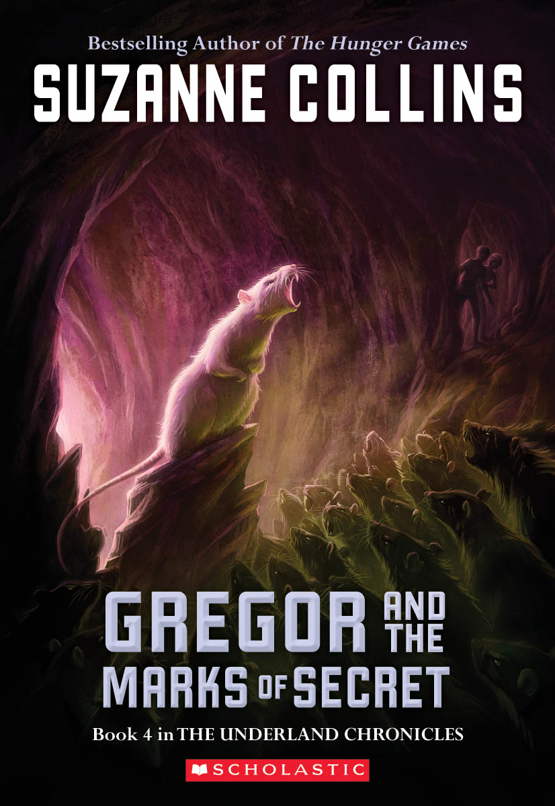

Gregor and the Marks of Secret:
Book Four in the Underland Chronicles
A NEW YORK TIMES BESTSELLING SERIES
A BOOK SENSE BESTSELLING SERIES
USA TODAY BESTSELLER
A BOOK SENSE CHILDREN'S PICK
CCBC CHOICES 2008
2009 ALSC NOTABLE CHILDREN'S RECORDING (audio version) Read by Paul Boehmer
"In this penultimate volume in "The Underland Chronicles," Collins begins to gather herself for the grand finale...The cliffhanger ending will leave readers gasping as Gregor goes chasing another prophecy, the direst yet.)."
--Kirkus Reviews, STARRED REVIEW
"Collins keeps the tension and the stakes high; vivid description, expert pacing, and subtle character development all enhance this gripping fantasy adventure. At the conclusion, we leave Gregor heading into what promises to be an interspecies conflict of epic proportions. "Who would he be...if he survived?" Readers will have to wait for the fifth (and final?) book to find out. K.F."
--The Horn Book Magazine
"The breathless pace, intense drama, and extraordinary challenges will leave fans clamoring for the conclusion of this fine series."
--School Library Journal
"Gregor is getting into more trouble: for generations rats have run the mice out of their lands; but now the mice are vanishing completely, and Gregor must join the queen Luxa on a fact-finding mission to discovery why. For once no prophecy seems involved – until he discovers a truth which will lead him to the final prophecy he must fulfill. More sizzling adventure evolves during his quest for mice."
--Midwest Book Review
"Fans will be panting for this next installment that follows Gregor and the Curse of the Warm Bloods."
--VOYA